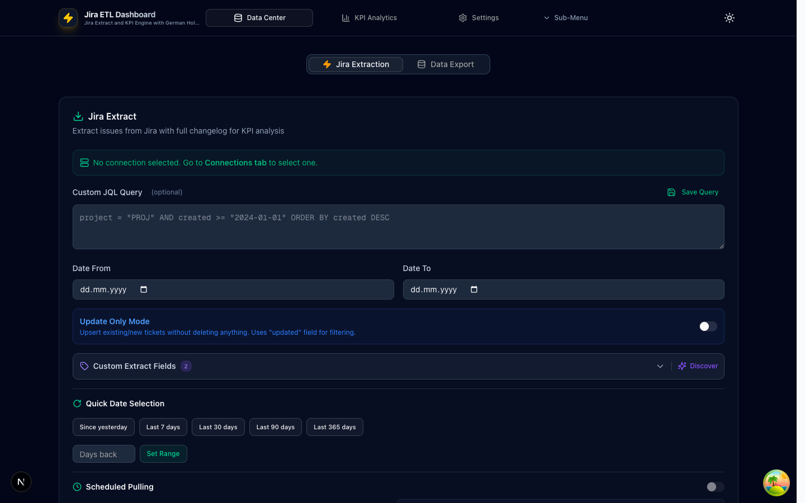
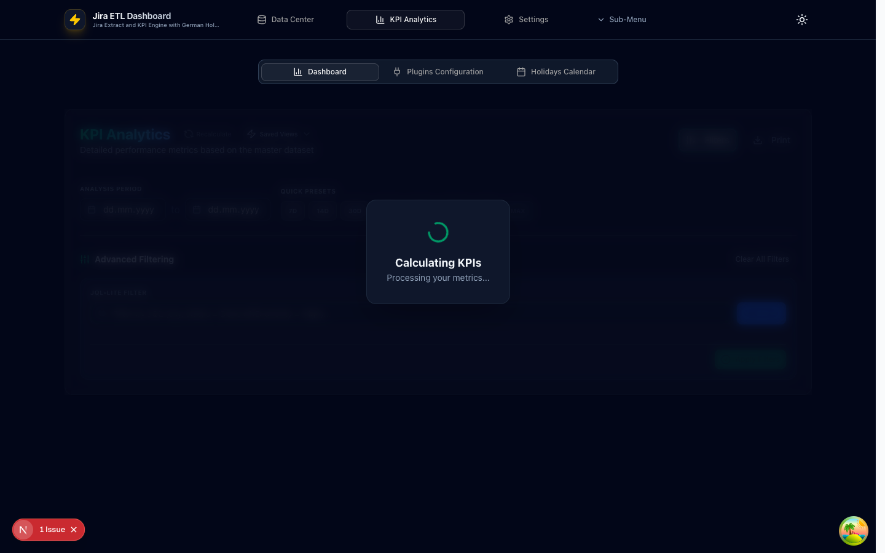

Extract ticket data from Jira Cloud or Server, calculate custom KPIs with German holiday-aware business-hour calculations, and export results to Metabase, CSV, JSON, or PostgreSQL.
https://id.atlassian.com/manage-profile/security/api-tokenshttps://yourcompany.atlassian.net)Clone the repository and install dependencies:
git clone <repository-url>
cd jira-etl-dashboard
npm installnpm run devThe dashboard will be available at http://localhost:3000.
DATABASE_URL in a .env file and run npm run db:push:pg to initialize the database schema.Before extracting data, you need to configure at least one Jira connection:
The Jira Extraction panel is where you query Jira for ticket data and build your master dataset. It provides a powerful yet easy-to-use interface for ETL operations.
Enter a JQL (Jira Query Language) expression in the text area to define which tickets to extract. For example:
project = "PROJ" AND status changed AFTER -30dYou can save, load, and delete frequently used queries for quick reuse.
Set the extraction period using the From and To date pickers. Quick presets are available for common ranges:
Excludes anything older than yesterday
Rolling window from today
Enter any number of days for a custom rolling window
updated field for incremental syncing.After extraction, results appear in a card showing:
The Master Dataset accumulates tickets across all extractions. It shows total unique tickets, date range, and last update time. Use Show All Tickets to browse the full dataset, or Clear Master Dataset to reset.

The Data Export panel lets you push processed data out of the dashboard in two modes:
The KPI Dashboard is the heart of the application — it visualizes calculated metrics as interactive cards, charts, progress bars, and data tables.
At the top of the dashboard you'll find:
Trigger a full KPI recalculation with current filters and date range.
Save, load, and manage named dashboard views (see Saved Views section).
Toggle the filter panel — badge shows active filter count.
Export the dashboard to PDF via the browser's print dialog.
Choose the analysis period with date pickers or use the quick preset buttons:
| Preset | Range |
|---|---|
7D | Last 7 days |
14D | Last 14 days |
30D | Last 30 days |
60D | Last 60 days |
90D | Last 90 days |
180D | Last 180 days |
1Y | Last 365 days |
MAX | All available data |
The filter panel provides powerful multi-dimensional filtering:
The dashboard renders multiple widget sections, each collapsible and reorderable via drag-and-drop:
| Widget | Description |
|---|---|
| Turnaround Time by Status | Horizontal progress bars showing business hours per workflow status. Click to drill down. |
| Open Tickets by Status | Status breakdown with age-group coloring: green (this week), amber (1 week), red (2+ weeks). |
| SLA by Priority | SLA compliance rates by priority level. |
| Open Tickets by Assignee/Team | Workload distribution across team members. |
| Cycle Time Histogram | Distribution of ticket cycle times. |
| Aging WIP | Visualizes work-in-progress aging across status columns. |
| Kanban Board | Open tickets organized by kanban column. |
| Weekly Ticket List | List of tickets grouped by week. |
| Custom Chart Cards | User-configurable charts with metric selector, chart type, JQL filters, and more. |
Each KPI widget displays:
A sortable, filterable data table showing all calculated KPI results with columns: Plugin, Metric, Dimension, Dimension Type, Value, Unit, Alert Status, and Ticket Count. Includes search, plugin filter, and dimension type filter.
Click any KPI card or table row to open the Drill-Down Sheet — a slide-out panel on the right showing the underlying tickets:

The Plugins Configuration panel controls which KPI metrics are calculated and how they appear on the dashboard.
The left column shows all available plugins grouped by category:
Average processing time, first response time, resolution time (6 plugins)
Closed tickets, created tickets, net flow, throughput trend (4 plugins)
SLA compliance, SLA by status, SLA breach rate (4 plugins)
Turnaround time by status, total turnaround (2 plugins)
Reopened tickets, reopen rate (2 plugins)
Tickets by assignee, open by assignee, workload (3 plugins)
Trending metrics over time with 7 plugins for processing, throughput, and SLA trends
User-created plugins using DSL or JavaScript
Toggle checkboxes to enable/disable plugins. Star plugins as favorites. Use search and filter tabs (All / Active / Favorites) to find plugins quickly.
The right column shows the display order of active, non-time-series widgets. Use drag-and-drop (via the grip handle) to reorder how widgets appear on the dashboard.
Create your own KPI plugins using the Plugin Builder:
Set a category and unit for the plugin, then save. Custom plugins are hot-reloaded automatically.
Configure warning and critical thresholds for each plugin:
> (greater than) or < (less than)The Holidays Calendar shows German national and regional holidays used for business-hour KPI calculations.
Manage your Jira server connections from this panel.
The Storage panel manages where your extracted data is persisted.
| Storage | Description |
|---|---|
| Local SQLite | Embedded database (dev.db). No configuration needed — works out of the box. Best for development and single-user setups. |
| PostgreSQL / Supabase | External database for shared access, Metabase integration, or production deployments. Configure host, port, database, username, password, SSL mode, schema, and table. |
View statistics including total extractions, total tickets, database size, and per-connection breakdowns. Use Clear Orphaned Data to clean up disconnected records, or Clear All Data for a full reset.
Export your full dashboard configuration as a JSON file (includes connections, settings, presets, and saved views). Import a previously exported configuration to restore settings on another machine.
| Setting | Description |
|---|---|
| Delay (ms) | Pause between API requests to avoid rate limits |
| Max Requests/min | Maximum number of Jira API calls per minute |
| Batch Size | Number of tickets fetched per API call |
| Backoff Strategy | None, Linear, or Exponential — how to handle rate limit errors |
The View Manager lets you save and restore complete dashboard states. Each saved view captures:
Add your own charts to the dashboard using Custom Chart Cards. Each chart is fully configurable:
| Setting | Options |
|---|---|
| KPI Metric | Dropdown grouped by Time-Series Trends and Standard KPIs |
| Chart Type | Bar, Line, Pie, Area (time-series auto-switches to Line) |
| Width | Small, Medium, Large, Full |
| Height | Short, Medium, Tall, Extra Tall |
| JQL Filter | Override or refine — apply custom JQL to scope the chart's data |
Speed up your workflow with these keyboard shortcuts:
| Shortcut | Action |
|---|---|
| R | Recalculate Dashboard KPIs |
| / | Focus JQL Search input |
| 1 | Switch to Data Center tab |
| 2 | Switch to KPI Analytics tab |
| 3 | Switch to Settings tab |
| Cmd/Ctrl + P | Print / Export to PDF |
| Escape | Blur input field / cancel editing |
Yes. The dashboard supports both Jira Cloud (using API tokens) and Jira Server/Data Center (using username + password). Enter your server's base URL and credentials in the Connections panel.
| Issue | Solution |
|---|---|
| Rate limit errors during extraction | Increase the delay or decrease max requests/min in Settings → Configuration → Rate Limiting. Switch backoff strategy to Exponential. |
| Connection test fails | Verify the base URL, email, and API token. Check network access and firewall rules. Ensure the account has API access permissions. |
| PostgreSQL sync fails | Verify the DATABASE_URL in .env. Run npm run db:push:pg to ensure the schema is up to date. Check SSL mode settings. |
| Dashboard shows "No Data" | Run a Jira extraction first. Check that the master dataset is populated. Verify the date range covers available data. |
| Custom plugin not appearing | Ensure the plugin file is in the correct directory. Check for syntax errors — custom plugins are error-isolated and will silently fail if invalid. |
docs/ directory for detailed guides on Electron builds, JIRA field configuration, and custom plugins.